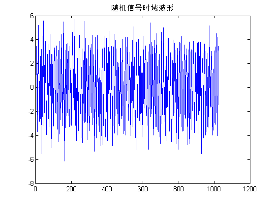
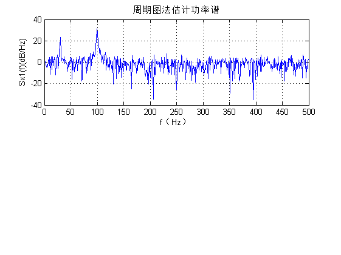
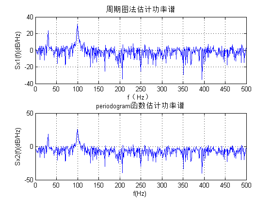

实验II：系统对随机信号响应的统计特性分析、功率谱分析及应用实验
之一：直接法估计随机信号功率谱 参照例 2.6-4 2016.11.4
Contents
准备环境
clear all close all clc
生成随机信号样本
两个带随机相位的单谱信号与白噪声之和
N=1024;fs=1000; %序列长度和采样频率 t=(0:N-1)/fs; %时间序列 fai=random('unif',0,1,1,2)*2*pi; %产生2个[0，2pi]内均匀随机数 xn=cos(2*pi*30*t+fai(1))+3*cos(2*pi*100*t+fai(2))+randn(1,N); %产生含噪声的随机序列
显示数据
figure,plot(xn);
title('随机信号时域波形')

直接法谱估计
对样本进行傅里叶变换，取模平方时间平均
Sx1=abs(fft(xn)).^2/N; %估计功率谱 f=(0:N/2-1)*fs/N; %频率轴坐标 figure subplot(211); plot(f,10*log10(Sx1(1:N/2)));grid on; %用dB/Hz做功率谱单位，画图 xlabel('f（Hz）'); ylabel('Sx1(f)(dB/Hz)'); title('周期图法估计功率谱');
与内置函数对比
periodogram
Sx2=periodogram(xn); subplot(212); plot(f,10*log10(Sx2(1:N/2)));grid on; xlabel('f(Hz)'); ylabel('Sx2(f)(dB/Hz)'); title('periodogram函数估计功率谱');
尝试改变信号、噪声的幅度和频率观察效果
%建议有经验的学生用GUI方式，实时调整参数，实时显示效果